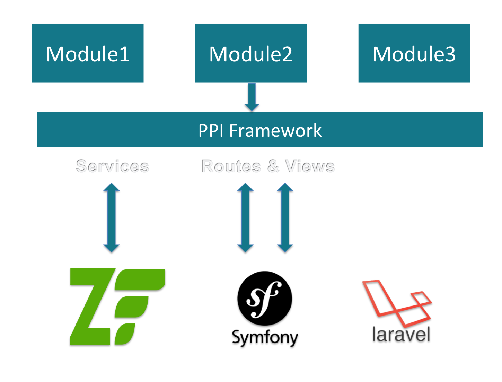

The PHP Interoperability Framework


Agenda
- About PPI?
- What's inside? - PPI nuts & bolts
- Practical examples
Thank you PHP community!
- Evan Coury (EvanDotPro)
- Matthew Weier O'Phinney (mwop)
- Jakub Zalas (jakub_zalas)
- Ben Tadiar (BenExile)
- Rob Allen (akrabat)
- Gary Hockin (GeeH)
- Ben Scholzen (DASPRiD)
- Paul M Jones (pmjones)
- Fabien Potencier (fabpot)
- Taylor Otwell (taylorotwell)
What PPI is not
It's *NOT* Payment Protection Insurance.
It's *NOT* a framework introducing anything new to you.
P.P.I.?
Hmm... what does it stand for? I don't know!
- PHP
- Phramework

- Interoperability
Tonight:
PPI v2
PPI PHP Meta Framework is the best PPI PHP Meta Framework!
Why does PPI exist?
What problems does it solve?
Currently, existing frameworks impose a 1-to-1 relationship between your framework app and the framework vendor.
What issues does this cause?
Vendor lock-in!
Vendor Lock-In

Problems with Vendor Lock-In
You are tightly coupled to the framework that your app was built on.
You can't move your code between apps on different frameworks.
Benefits of PPI
Re-usability of knowledge and community effort!
It’s using existing code from existing frameworks that you already know.
Your app code belongs to you, not to your framework.
As PHP grows, PPI will grow (Zend3, Aura3, Symfony3).
2. What's inside?
PPI nuts & bolts

Leverage PHP-FIG standards
A friendly environment for swappable 3rd-party components.
Components may be PSR-ready or potential candidates (Router).
Spearhead PHP-FIG concepts and ideas with a real-life POC for these standards.
PSR - What's in // what's coming?

PSR-6: Caching Interface
In production for over 2 years now, but PSR-6 still not finished.
namespace PPI\CacheModule\Cache\Driver;
use PPI\CacheModule\Cache\CacheItem;
use PPI\CacheModule\Cache\CacheInterface;
class RedisCache implements CacheInterface {
// ...
}
Other implementations: APC, Disk, Memcached, Memory, Xcache.
PSR-7: HTTP Message Interface
PPI is PSR-7 ready!
You can easily adding more libraries into the mix when they implement PSR-7.
When consuming frameworks like (ZF2, SF2, Aura2) - that don't support PSR-7 yet - PPI bridges the gap for you.
PSR-7: Can We Haz Quorum?

\o/
PSR-7: Request Interface
composer.json:"require": {
"psr/http-message": "^0.11"
}
PPI/Framework/Http/Request.phpuse Psr\Http\Message\RequestInterface;
use Symfony\Component\HttpFoundation\Request as SymfonyHttpRequest;
/**
* HTTP messages consist of requests from a client to a server and
* responses from a server to a client. This interface defines the
* methods common to each.
*/
class Request extends SymfonyHttpRequest implements RequestInterface
{
// ...
} PSR-7: Want to know more?
Don't ask us. Ask this guy!
PPI Module extends ZF2 Module

PPI Module With Routers

PPI Module With Templating Engines

Object Mediation - No abstraction! :-)
No added abstraction on top of existing framework.

Module1 Rest API Module

Module2 MVC Full Stack App

Module3 MVC Full Stack App

PPI Router
We made a routing interoperability layer (Routing PSR?).
Mediate routing and request information from PPI to Aura (for example).
If a Routing PSR is created, we get to throw away a lot of code

3. Practical Examples
Using PPI
Installation
21st century. Use composer:
Step 1:
$ composer create-project -sdev --no-interaction \
ppi/skeleton-app /var/www/skeleton
and for your convenience:
Step 2
$ vagrant up ppi-lamp
and now...
Skeleton App
Application structure
public/index.php
<?php
// Setup autoloading and include PPI
require_once 'app/init.php';
// Set the environment
$env = getenv('PPI_ENV') ?: 'dev';
$debug = getenv('PPI_DEBUG') !== '0' && $env !== 'prod';
// Create and configure the Application
$app = new PPI\Framework\App(array(
'environment' => $env,
'debug' => $debug,
'rootDir' => realpath(__DIR__.'/../app')
));
$app->loadConfig($app->getEnvironment().'/app.php');
// Handle requests
$app->run();
Module Structure
Application
|
├── Module.php
├── resources
│ ├── config
│ │ └── config.yml
│ ├── routes
│ │ ├── aura.php
│ │ └── symfony.yml
│ └── views
│ └── index
│ ├── index.html.mustache
│ ├── index.html.php
│ ├── index.html.smarty
│ └── index.html.twig
└── src
├── Classes
│ └── CommunityHelper.php
├── Controller
│ ├── Index.php
│ └── Shared.php
Module Code
class Module extends AbstractModule implements ModuleInterface
{
public function getRoutes() {
return $this->getSymfonyRoutes();
// or
return $this->getAuraRoutes();
}
public function getAuraRoutes() {
return $this->loadAuraRoutes(__DIR__ . '/resources/routes/aura.php');
}
public function getSymfonyRoutes() {
return $this->loadYamlRoutes(__DIR__ . '/resources/routes/symfony.yml');
}
public function getConfig() {
return $this->loadConfig(__DIR__ . '/resources/config/config.yml');
}
Let's chat?
- Gitter: gitter.im/ppi/chat
- Good ol'IRC: freenode#ppi
- @ppi_framework
- @dr4goonis
- @noiselabs
Thanks.
Questions?